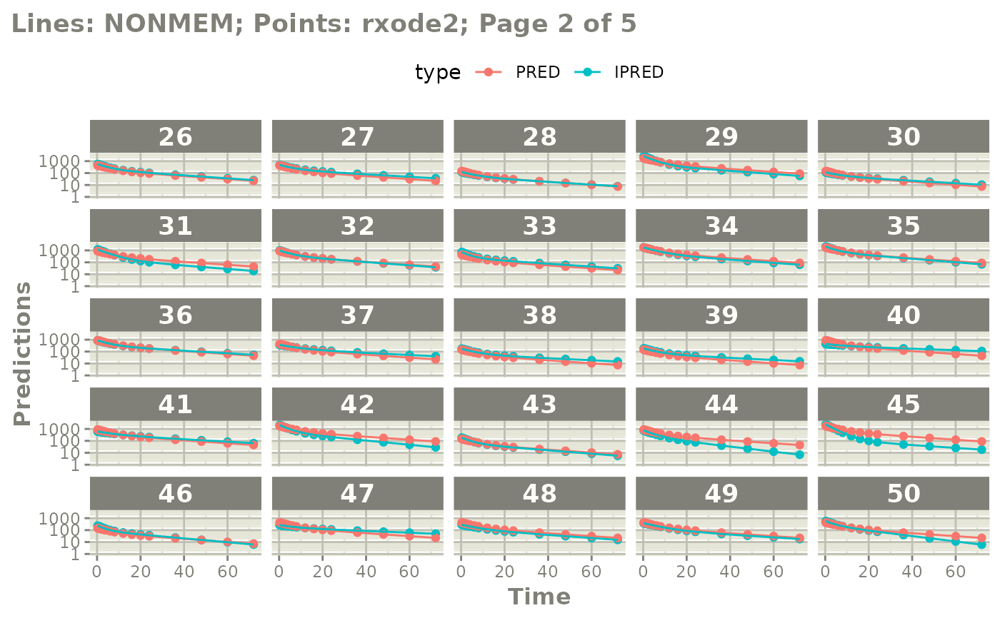
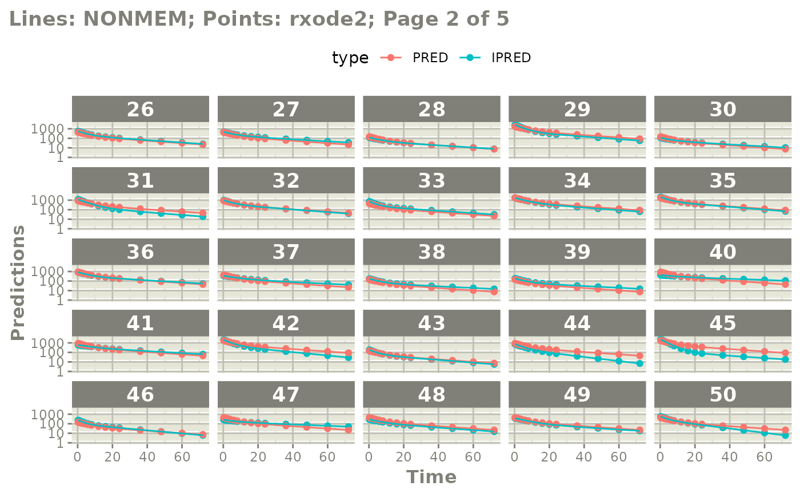
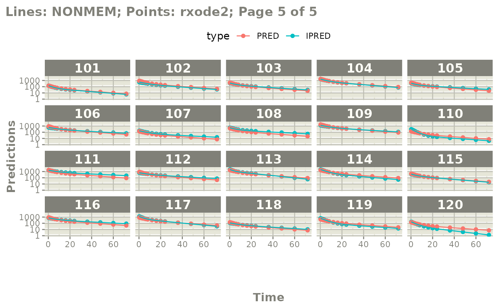
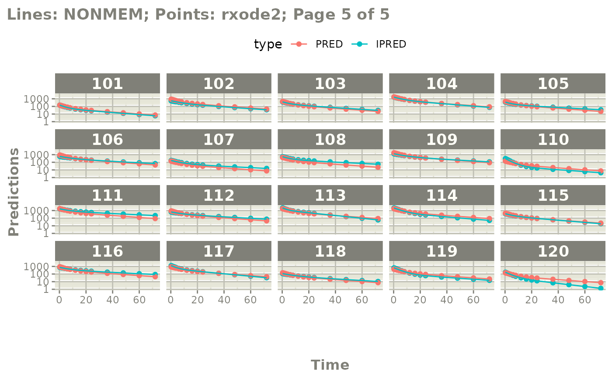

Convert a NONMEM source file to a rxode model (nlmixr2-syle)
Usage
nonmem2rx(
file,
inputData = NULL,
nonmemOutputDir = NULL,
rename = NULL,
tolowerLhs = TRUE,
thetaNames = TRUE,
etaNames = TRUE,
cmtNames = TRUE,
updateFinal = TRUE,
determineError = TRUE,
validate = getOption("nonmem2rx.validate", TRUE),
nonmemData = FALSE,
strictLst = FALSE,
unintFixed = FALSE,
extended = getOption("nonmem2rx.extended", FALSE),
nLinesPro = 20L,
delta = 1e-04,
usePhi = TRUE,
useExt = TRUE,
useCov = TRUE,
useXml = TRUE,
useLst = TRUE,
mod = ".mod",
cov = ".cov",
phi = ".phi",
lst = getOption("nonmem2rx.lst", ".lst"),
xml = ".xml",
ext = ".ext",
grd = ".grd",
scanLines = getOption("nonmem2rx.scanLines", 50L),
save = getOption("nonmem2rx.save", NA),
saveTime = getOption("nonmem2rx.saveTime", 15),
overwrite = getOption("nonmem2rx.overwrite", TRUE),
load = getOption("nonmem2rx.load", TRUE),
compress = getOption("nonmem2rx.compress", TRUE),
keep = getOption("nonmem2rx.keep", c("dfSub", "dfObs", "thetaMat", "sigma"))
)Arguments
- file
NONMEM run file, like an
.xmlor.lstfile or even a control stream- inputData
this is a path to the input dataset (or
NULLto determine from the dataset). Often the input dataset may be different from the place it points to in the control stream because directories can be created to run NONMEM from a script. Because of this, when this is specified the input data will be assumed to be from here instead.- nonmemOutputDir
This is a path the the nonmem output directory. When not
NULLit will assume that the diretory for the output files is located here instead of where the control stream currently exists.- rename
When not
NULLthis should be a named character vector that contains the parameters that should be renamed. For example, if the model uses the variableYTYPEand hasCMTit isn't compatible withrxode2/nlmixr2. You can change this for the input dataset and the model to create a new model that still reproduces the NONMEM output by specifyingrename=c(dvid="YTYPE")- tolowerLhs
Boolean to change the lhs to lower case (default:
TRUE)- thetaNames
this could be a boolean indicating that the theta names should be changed to the comment-labeled names (default:
TRUE). This could also be a character vector of the theta names (in order) to be replaced.- etaNames
this could be a boolean indicating that the eta names should be changed to the comment-labeled names (default:
TRUE). This could also be a character vector of the theta names (in order) to be replaced.- cmtNames
this could be a boolean indicating that the compartment names should be changed to the named compartments in the
$MODELbyCOMP = (name)(default:TRUE). This could also be a character vector of the compartment names (in order) to be replaced.- updateFinal
Update the parsed model with the model estimates from the
.lstoutput file.- determineError
Boolean to try to determine the
nlmixr2-style residual error model (likeipred ~ add(add.sd)), otherwise endpoints are not defined in therxode2/nlmixr2model (default:TRUE)- validate
Boolean that this tool will attempt to "validate" the model by solving the derived model under pred conditions (etas are zero and eps values are zero)
- nonmemData
Boolean that tells
nonmem2rxto read in the nonmem data (if possible) even if the model will not be validated (like if it is a simulation run or missing final parameter estimates). By default this isFALSE, nonmem data will not be integrated into the nonmem2rx ui.- strictLst
The list parsing needs to be correct for a successful load (default
FALSE).- unintFixed
Treat uninteresting values as fixed parameters (default
FALSE)- extended
Translate extended control streams from tools like wings for NONMEM
- nLinesPro
The number of lines to check for the $PROBLEM statement.
- delta
this is the offset for NONMEM times that are tied
- usePhi
if present, use the NONMEM phi file to extract etas (default
TRUE), otherwise defaults to etas in the tables (if present)- useExt
if present, use the NONMEM ext file to extract parameter estimates (default
TRUE), otherwise defaults to parameter estimates extracted in the NONMEM output- useCov
if present, use the NONMEM cov file to import the covariance, otherwise import the covariance with list file
- useXml
if present, use the NONMEM xml file to import much of the NONMEM information
- useLst
if present, use the NONMEM lst file to extract NONMEM information
- mod
the NONMEM output extension, defaults to
.mod- cov
the NONMEM covariance file extension, defaults to
.cov- phi
the NONMEM eta/phi file extension, defaults to
.phi- lst
the NONMEM output extension, defaults to
.lst- xml
the NONMEM xml file extension , defaults to
.xml- ext
the NONMEM ext file extension, defaults to
.ext- grd
the NONMEM gradient file extension, defaults to
.grd- scanLines
number of lines to scan for comment chars when
IGNORE=@, default is 50- save
This can be:
a
NULL(meaning don't save),a logical (default
FALSE, don't save) that whenTRUEwill use the base name of the control stream, append.qsand save the file usingqs::qsave()A path to a file to write
Note that this file will be saved with qs::qsave() and can be loaded with qs::qread()
A
NAvalue which means save if the whole process (including validation) takes too much time
- saveTime
The time that the translation/validation needs (in secs) before it will save to avoid having to rerun the model (default 15 for 15 seconds)
- overwrite
is a boolean to allow overwriting the save file (see
loadfor more information).- load
a boolean that says to load the save file (if it exists) instead of re-running the translation and validation. Note if
overwrite=TRUEandload=TRUEthen this will overwrite based on time stamp of the files. If the save file is newer than the input file, then load that file, otherwise regenerate and overwrite. This works best if you point to an output file, like a.xmlor listing file instead of the control stream- compress
a boolean indicating if the UI should be a compressed UI. If you are using this for simulation with old versions of rxode2, the compressed ui is not supported, so this should be
FALSE. Otherwise useTRUEif you are using a newer rxode2.- keep
is a character vector of imported model items that are kept in the model itself; The defaults is "sigma" which keeps the sigma matrix in the model itself. You can add rxode2 solving options that are imported from NONMEM to keep in the model.
Details
Since some of these options you may want to set per project, the following options are queried:
nonmem2rx.validate- boolean to validate the model (default:TRUE)nonmem2rx.lst- default extension for output (default:.lst)nonmem2rx.save- should nonmem2rx save the model output?nonmem2rx.overwrite- should nonmem2rx save output be overwritten (defaultTRUE)nonmem2rx.load- should nonmem2rx load a saved model instead of translating and validating again? (defaultTRUE)nonmem2rx.extended- should nonmem2rx support extended control streams? (defaultFALSE)nonmem2rx.compress- should the ui be compressed or uncompressed (default:TRUE)
Examples
# You can run a translation without validating the input. This is
# a faster way to import a dataset (and allows the CRAN machines to
# run a quick example)
mod <- nonmem2rx(system.file("mods/cpt/runODE032.ctl", package="nonmem2rx"), lst=".res",
save=FALSE, validate=FALSE, compress=FALSE)
#> ℹ getting information from '/home/runner/work/_temp/Library/nonmem2rx/mods/cpt/runODE032.ctl'
#> ℹ reading in xml file
#> ℹ done
#> ℹ reading in ext file
#> ℹ done
#> ℹ reading in phi file
#> ℹ done
#> ℹ reading in lst file
#> ℹ abbreviated list parsing
#> ℹ done
#> ℹ reading in grd file
#> ℹ done
#> ℹ splitting control stream by records
#> ℹ done
#> ℹ Processing record $INPUT
#> ℹ Processing record $MODEL
#> ℹ Processing record $gTHETA
#> ℹ Processing record $OMEGA
#> ℹ Processing record $SIGMA
#> ℹ Processing record $PROBLEM
#> ℹ Processing record $DATA
#> ℹ Processing record $SUBROUTINES
#> ℹ Processing record $PK
#> ℹ Processing record $DES
#> ℹ Processing record $ERROR
#> ℹ Processing record $ESTIMATION
#> ℹ Ignore record $ESTIMATION
#> ℹ Processing record $COVARIANCE
#> ℹ Ignore record $COVARIANCE
#> ℹ Processing record $TABLE
#> ℹ change initial estimate of `theta1` to `1.37034036528946`
#> ℹ change initial estimate of `theta2` to `4.19814911033061`
#> ℹ change initial estimate of `theta3` to `1.38003493562413`
#> ℹ change initial estimate of `theta4` to `3.87657341967489`
#> ℹ change initial estimate of `theta5` to `0.196446108190896`
#> ℹ change initial estimate of `eta1` to `0.101251418415006`
#> ℹ change initial estimate of `eta2` to `0.0993872449483344`
#> ℹ change initial estimate of `eta3` to `0.101302674763154`
#> ℹ change initial estimate of `eta4` to `0.0730497519364148`
#> ℹ changing most variables to lower case
#> ℹ done
#> ℹ replace theta names
#> ℹ done
#> ℹ replace eta names
#> ℹ done (no labels)
#> ℹ renaming compartments
#> ℹ done
# \donttest{
# Though by default you likely wish to validate the input
mod <- nonmem2rx(system.file("mods/cpt/runODE032.ctl", package="nonmem2rx"),
lst=".res", save=FALSE)
#> ℹ getting information from '/home/runner/work/_temp/Library/nonmem2rx/mods/cpt/runODE032.ctl'
#> ℹ reading in xml file
#> ℹ done
#> ℹ reading in ext file
#> ℹ done
#> ℹ reading in phi file
#> ℹ done
#> ℹ reading in lst file
#> ℹ abbreviated list parsing
#> ℹ done
#> ℹ reading in grd file
#> ℹ done
#> ℹ splitting control stream by records
#> ℹ done
#> ℹ Processing record $INPUT
#> ℹ Processing record $MODEL
#> ℹ Processing record $gTHETA
#> ℹ Processing record $OMEGA
#> ℹ Processing record $SIGMA
#> ℹ Processing record $PROBLEM
#> ℹ Processing record $DATA
#> ℹ Processing record $SUBROUTINES
#> ℹ Processing record $PK
#> ℹ Processing record $DES
#> ℹ Processing record $ERROR
#> ℹ Processing record $ESTIMATION
#> ℹ Ignore record $ESTIMATION
#> ℹ Processing record $COVARIANCE
#> ℹ Ignore record $COVARIANCE
#> ℹ Processing record $TABLE
#> ℹ change initial estimate of `theta1` to `1.37034036528946`
#> ℹ change initial estimate of `theta2` to `4.19814911033061`
#> ℹ change initial estimate of `theta3` to `1.38003493562413`
#> ℹ change initial estimate of `theta4` to `3.87657341967489`
#> ℹ change initial estimate of `theta5` to `0.196446108190896`
#> ℹ change initial estimate of `eta1` to `0.101251418415006`
#> ℹ change initial estimate of `eta2` to `0.0993872449483344`
#> ℹ change initial estimate of `eta3` to `0.101302674763154`
#> ℹ change initial estimate of `eta4` to `0.0730497519364148`
#> ℹ read in nonmem input data (for model validation): /home/runner/work/_temp/Library/nonmem2rx/mods/cpt/Bolus_2CPT.csv
#> ℹ ignoring lines that begin with a letter (IGNORE=@)'
#> ℹ applying names specified by $INPUT
#> ℹ subsetting accept/ignore filters code: .data[-which((.data$SD == 0)),]
#> ℹ renaming 'ytype' to 'nmytype'
#> ℹ done
#>
#>
#> using C compiler: ‘gcc (Ubuntu 13.3.0-6ubuntu2~24.04) 13.3.0’
#> ℹ read in nonmem IPRED data (for model validation): /home/runner/work/_temp/Library/nonmem2rx/mods/cpt/runODE032.csv
#> ℹ done
#> ℹ changing most variables to lower case
#> ℹ done
#> ℹ replace theta names
#> ℹ done
#> ℹ replace eta names
#> ℹ done (no labels)
#> ℹ renaming compartments
#> ℹ done
#>
#>
#> using C compiler: ‘gcc (Ubuntu 13.3.0-6ubuntu2~24.04) 13.3.0’
#> ℹ solving ipred problem
#> ℹ done
#> ℹ solving pred problem
#> ℹ done
mod
#> ── rxode2-based free-form 2-cmt ODE model ──────────────────────────────────────
#> ── Initalization: ──
#> Fixed Effects ($theta):
#> theta1 theta2 theta3 theta4 RSV
#> 1.3703404 4.1981491 1.3800349 3.8765734 0.1964461
#>
#> Omega ($omega):
#> eta1 eta2 eta3 eta4
#> eta1 0.1012514 0.00000000 0.0000000 0.00000000
#> eta2 0.0000000 0.09938724 0.0000000 0.00000000
#> eta3 0.0000000 0.00000000 0.1013027 0.00000000
#> eta4 0.0000000 0.00000000 0.0000000 0.07304975
#>
#> States ($state or $stateDf):
#> Compartment Number Compartment Name
#> 1 1 CENTRAL
#> 2 2 PERI
#> ── μ-referencing ($muRefTable): ──
#> theta eta level
#> 1 theta1 eta1 id
#> 2 theta2 eta2 id
#> 3 theta3 eta3 id
#> 4 theta4 eta4 id
#>
#> ── Model (Normalized Syntax): ──
#> function() {
#> description <- "BOLUS_2CPT_CLV1QV2 SINGLE DOSE FOCEI (120 Ind/2280 Obs) runODE032"
#> dfObs <- 2280
#> dfSub <- 120
#> sigma <- lotri({
#> eps1 ~ 1
#> })
#> thetaMat <- lotri({
#> theta1 ~ c(theta1 = 0.000887681)
#> theta2 ~ c(theta1 = -0.00010551, theta2 = 0.000871409)
#> theta3 ~ c(theta1 = 0.000184416, theta2 = -0.000106195,
#> theta3 = 0.00299336)
#> theta4 ~ c(theta1 = -0.000120234, theta2 = -5.06663e-05,
#> theta3 = 0.000165252, theta4 = 0.00121347)
#> RSV ~ c(theta1 = 5.2783e-08, theta2 = -1.56562e-05, theta3 = 5.99331e-06,
#> theta4 = -2.53991e-05, RSV = 9.94218e-06)
#> eps1 ~ c(theta1 = 0, theta2 = 0, theta3 = 0, theta4 = 0,
#> RSV = 0, eps1 = 0)
#> eta1 ~ c(theta1 = -4.71273e-05, theta2 = 4.69667e-05,
#> theta3 = -3.64271e-05, theta4 = 2.54796e-05, RSV = -8.16885e-06,
#> eps1 = 0, eta1 = 0.000169296)
#> omega.2.1 ~ c(theta1 = 0, theta2 = 0, theta3 = 0, theta4 = 0,
#> RSV = 0, eps1 = 0, eta1 = 0, omega.2.1 = 0)
#> eta2 ~ c(theta1 = -7.37156e-05, theta2 = 2.56634e-05,
#> theta3 = -8.08349e-05, theta4 = 1.37e-05, RSV = -4.36564e-06,
#> eps1 = 0, eta1 = 8.75181e-06, omega.2.1 = 0, eta2 = 0.00015125)
#> omega.3.1 ~ c(theta1 = 0, theta2 = 0, theta3 = 0, theta4 = 0,
#> RSV = 0, eps1 = 0, eta1 = 0, omega.2.1 = 0, eta2 = 0,
#> omega.3.1 = 0)
#> omega.3.2 ~ c(theta1 = 0, theta2 = 0, theta3 = 0, theta4 = 0,
#> RSV = 0, eps1 = 0, eta1 = 0, omega.2.1 = 0, eta2 = 0,
#> omega.3.1 = 0, omega.3.2 = 0)
#> eta3 ~ c(theta1 = 6.63383e-05, theta2 = -8.19002e-05,
#> theta3 = 0.000548985, theta4 = 0.000168356, RSV = 1.59122e-06,
#> eps1 = 0, eta1 = 3.48714e-05, omega.2.1 = 0, eta2 = 4.31593e-07,
#> omega.3.1 = 0, omega.3.2 = 0, eta3 = 0.000959029)
#> omega.4.1 ~ c(theta1 = 0, theta2 = 0, theta3 = 0, theta4 = 0,
#> RSV = 0, eps1 = 0, eta1 = 0, omega.2.1 = 0, eta2 = 0,
#> omega.3.1 = 0, omega.3.2 = 0, eta3 = 0, omega.4.1 = 0)
#> omega.4.2 ~ c(theta1 = 0, theta2 = 0, theta3 = 0, theta4 = 0,
#> RSV = 0, eps1 = 0, eta1 = 0, omega.2.1 = 0, eta2 = 0,
#> omega.3.1 = 0, omega.3.2 = 0, eta3 = 0, omega.4.1 = 0,
#> omega.4.2 = 0)
#> omega.4.3 ~ c(theta1 = 0, theta2 = 0, theta3 = 0, theta4 = 0,
#> RSV = 0, eps1 = 0, eta1 = 0, omega.2.1 = 0, eta2 = 0,
#> omega.3.1 = 0, omega.3.2 = 0, eta3 = 0, omega.4.1 = 0,
#> omega.4.2 = 0, omega.4.3 = 0)
#> eta4 ~ c(theta1 = -9.49661e-06, theta2 = 0.000110108,
#> theta3 = -0.000306537, theta4 = -9.12897e-05, RSV = 3.1877e-06,
#> eps1 = 0, eta1 = 1.36628e-05, omega.2.1 = 0, eta2 = -1.95096e-05,
#> omega.3.1 = 0, omega.3.2 = 0, eta3 = -0.00012977,
#> omega.4.1 = 0, omega.4.2 = 0, omega.4.3 = 0, eta4 = 0.00051019)
#> })
#> validation <- c("IPRED relative difference compared to Nonmem IPRED: 0%; 95% percentile: (0%,0%); rtol=6.43e-06",
#> "IPRED absolute difference compared to Nonmem IPRED: 95% percentile: (2.19e-05, 0.0418); atol=0.00167",
#> "IWRES relative difference compared to Nonmem IWRES: 0%; 95% percentile: (0%,0.01%); rtol=8.99e-06",
#> "IWRES absolute difference compared to Nonmem IWRES: 95% percentile: (1.82e-07, 4.63e-05); atol=3.65e-06",
#> "PRED relative difference compared to Nonmem PRED: 0%; 95% percentile: (0%,0%); rtol=6.41e-06",
#> "PRED absolute difference compared to Nonmem PRED: 95% percentile: (1.41e-07,0.00382) atol=6.41e-06")
#> ini({
#> theta1 <- 1.37034036528946
#> label("log Cl")
#> theta2 <- 4.19814911033061
#> label("log Vc")
#> theta3 <- 1.38003493562413
#> label("log Q")
#> theta4 <- 3.87657341967489
#> label("log Vp")
#> RSV <- c(0, 0.196446108190896, 1)
#> label("RSV")
#> eta1 ~ 0.101251418415006
#> eta2 ~ 0.0993872449483344
#> eta3 ~ 0.101302674763154
#> eta4 ~ 0.0730497519364148
#> })
#> model({
#> cmt(CENTRAL)
#> cmt(PERI)
#> cl <- exp(theta1 + eta1)
#> v <- exp(theta2 + eta2)
#> q <- exp(theta3 + eta3)
#> v2 <- exp(theta4 + eta4)
#> v1 <- v
#> scale1 <- v
#> k21 <- q/v2
#> k12 <- q/v
#> d/dt(CENTRAL) <- k21 * PERI - k12 * CENTRAL - cl * CENTRAL/v1
#> d/dt(PERI) <- -k21 * PERI + k12 * CENTRAL
#> f <- CENTRAL/scale1
#> ipred <- f
#> rescv <- RSV
#> ipred ~ prop(RSV)
#> })
#> }
#> ── nonmem2rx translation notes ($notes): ──
#> • there are duplicate eta names, not renaming duplicate parameters
#> • there are duplicate theta names, not renaming duplicate parameters
#> ── nonmem2rx extra properties: ──
#> other properties include: $nonmemData, $etaData
#> captured NONMEM table outputs: $predData, $ipredData
#> NONMEM/rxode2 comparison data: $iwresCompare, $predCompare, $ipredCompare
#> NONMEM/rxode2 composite comparison: $predAtol, $predRtol, $ipredAtol, $ipredRtol, $iwresAtol, $iwresRtol
# you can plot to compare the pred/ipred differences
plot(mod)
 # if you want to see the individual differences
# you can by plotting by page of plots
plot(mod, nrow=2, ncol=2, page=1, log="y")
# if you want to see the individual differences
# you can by plotting by page of plots
plot(mod, nrow=2, ncol=2, page=1, log="y")
 # or select which pages you want to print
plot(mod, nrow=2, ncol=2, page=c(1,3), log="y")
# or select which pages you want to print
plot(mod, nrow=2, ncol=2, page=c(1,3), log="y")
 #' or even all the individuals with
# plot(page=TRUE)
plot(mod, nrow=5, ncol=5, page=TRUE, log="y")
#' or even all the individuals with
# plot(page=TRUE)
plot(mod, nrow=5, ncol=5, page=TRUE, log="y")
 


 
# you can also convert to a nlmixr2 object, but need babelmixr2 for
# that conversion
# }

# you can also convert to a nlmixr2 object, but need babelmixr2 for
# that conversion
# }